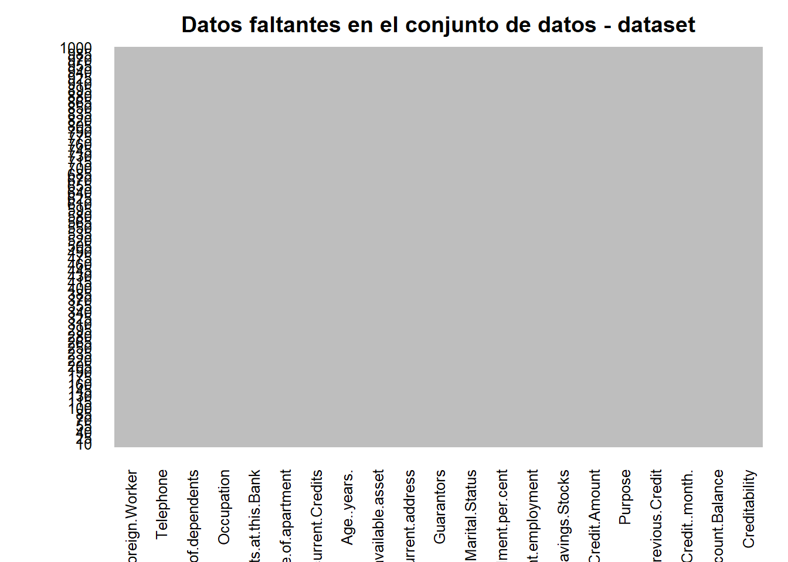
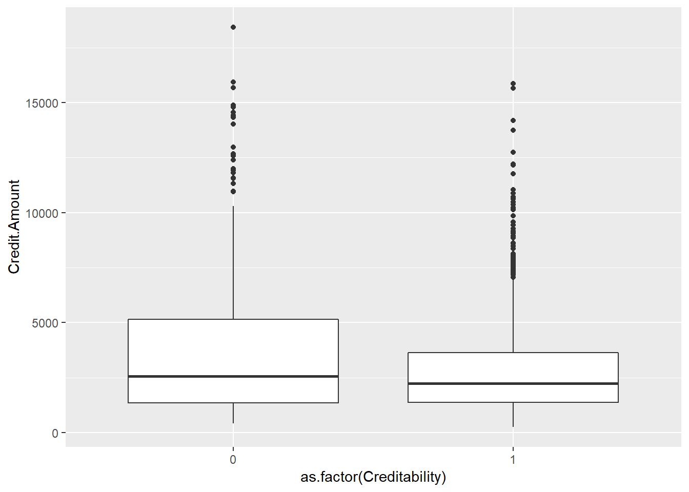
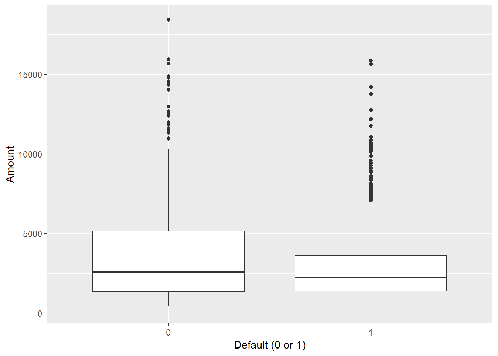
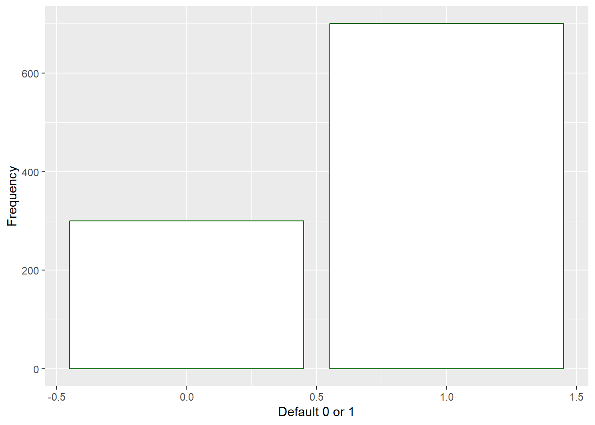
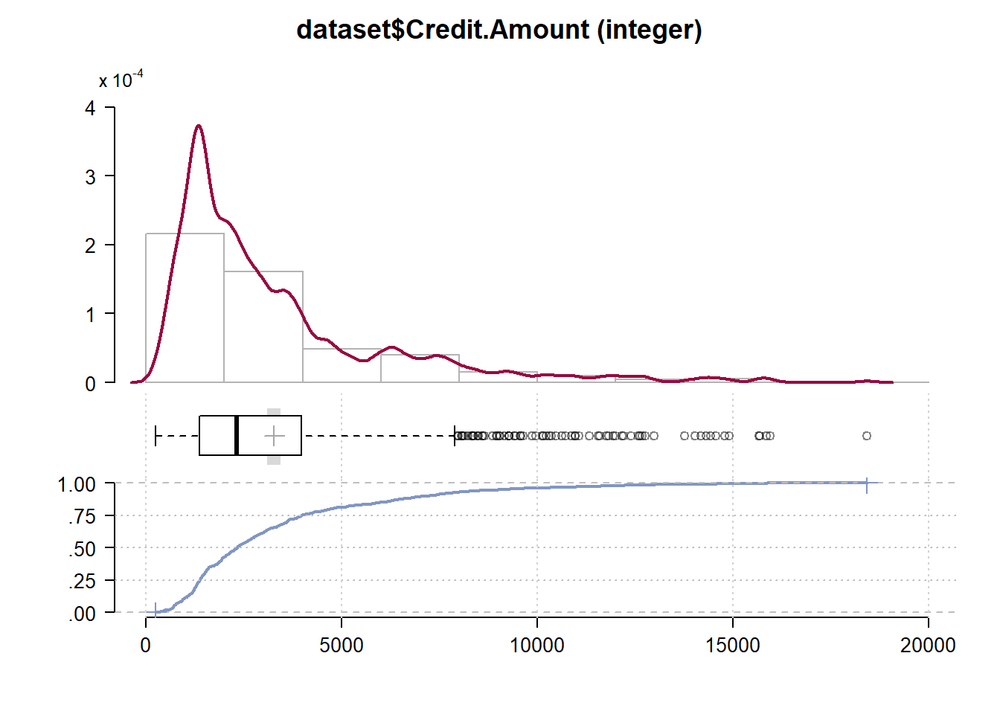
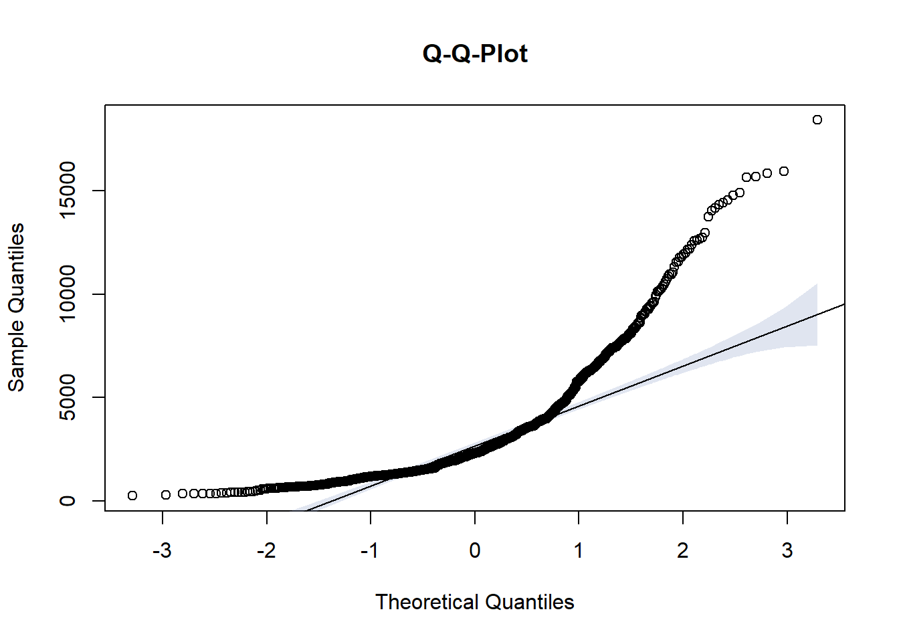
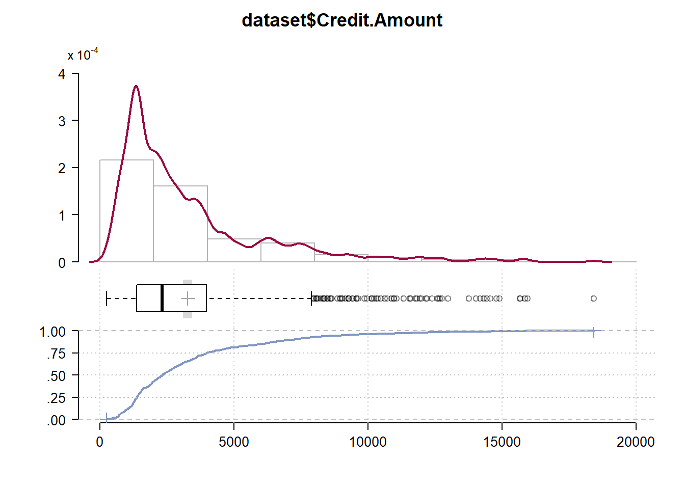
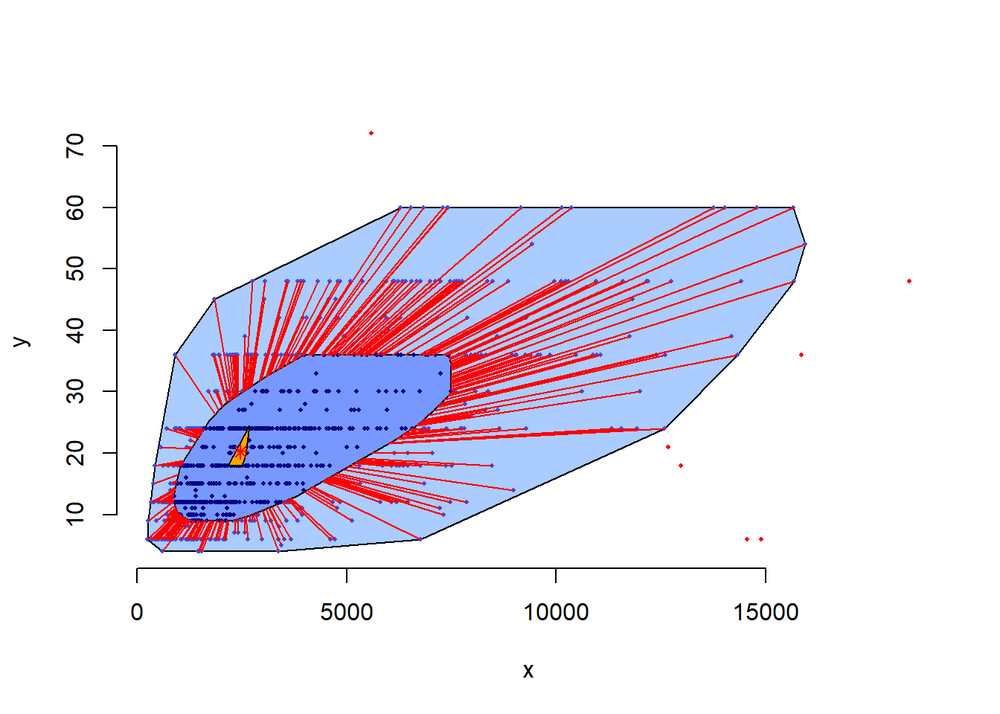

Sección 5 Explorar datos
5.1 Objetivo
El objetivo de esta sección consiste en presentar diferentes formas para realizar EDA - Exploratory Data Analysis. La presentación incluye formas gráficas al respecto.
Para empezar con una “exploración” necesitamos datos. P.ej. algunos datos de la web, desde un archivo csv … véase http://freakonometrics.free.fr/german_credit.csv
url="http://freakonometrics.free.fr/german_credit.csv"
dataset <- read.csv(url, header = TRUE, sep = ",")5.2 Desarrollar un entendimiento inicial del conjunto de datos
- Mostrar la clase del dataset
- Explorar las dimensiones del dataset
- Ver las primeras 6 filas del dataset
- Explorar la estructura del dataset
- Mostrar un resumen estadístico de las variables del dataset
class(dataset)## [1] "data.frame"dim(dataset) ## [1] 1000 21head(dataset) ## Creditability Account.Balance Duration.of.Credit..month.
## 1 1 1 18
## 2 1 1 9
## 3 1 2 12
## 4 1 1 12
## 5 1 1 12
## 6 1 1 10
## Payment.Status.of.Previous.Credit Purpose Credit.Amount
## 1 4 2 1049
## 2 4 0 2799
## 3 2 9 841
## 4 4 0 2122
## 5 4 0 2171
## 6 4 0 2241
## Value.Savings.Stocks Length.of.current.employment Instalment.per.cent
## 1 1 2 4
## 2 1 3 2
## 3 2 4 2
## 4 1 3 3
## 5 1 3 4
## 6 1 2 1
## Sex...Marital.Status Guarantors Duration.in.Current.address
## 1 2 1 4
## 2 3 1 2
## 3 2 1 4
## 4 3 1 2
## 5 3 1 4
## 6 3 1 3
## Most.valuable.available.asset Age..years. Concurrent.Credits
## 1 2 21 3
## 2 1 36 3
## 3 1 23 3
## 4 1 39 3
## 5 2 38 1
## 6 1 48 3
## Type.of.apartment No.of.Credits.at.this.Bank Occupation No.of.dependents
## 1 1 1 3 1
## 2 1 2 3 2
## 3 1 1 2 1
## 4 1 2 2 2
## 5 2 2 2 1
## 6 1 2 2 2
## Telephone Foreign.Worker
## 1 1 1
## 2 1 1
## 3 1 1
## 4 1 2
## 5 1 2
## 6 1 2str(dataset) ## 'data.frame': 1000 obs. of 21 variables:
## $ Creditability : int 1 1 1 1 1 1 1 1 1 1 ...
## $ Account.Balance : int 1 1 2 1 1 1 1 1 4 2 ...
## $ Duration.of.Credit..month. : int 18 9 12 12 12 10 8 6 18 24 ...
## $ Payment.Status.of.Previous.Credit: int 4 4 2 4 4 4 4 4 4 2 ...
## $ Purpose : int 2 0 9 0 0 0 0 0 3 3 ...
## $ Credit.Amount : int 1049 2799 841 2122 2171 2241 3398 1361 1098 3758 ...
## $ Value.Savings.Stocks : int 1 1 2 1 1 1 1 1 1 3 ...
## $ Length.of.current.employment : int 2 3 4 3 3 2 4 2 1 1 ...
## $ Instalment.per.cent : int 4 2 2 3 4 1 1 2 4 1 ...
## $ Sex...Marital.Status : int 2 3 2 3 3 3 3 3 2 2 ...
## $ Guarantors : int 1 1 1 1 1 1 1 1 1 1 ...
## $ Duration.in.Current.address : int 4 2 4 2 4 3 4 4 4 4 ...
## $ Most.valuable.available.asset : int 2 1 1 1 2 1 1 1 3 4 ...
## $ Age..years. : int 21 36 23 39 38 48 39 40 65 23 ...
## $ Concurrent.Credits : int 3 3 3 3 1 3 3 3 3 3 ...
## $ Type.of.apartment : int 1 1 1 1 2 1 2 2 2 1 ...
## $ No.of.Credits.at.this.Bank : int 1 2 1 2 2 2 2 1 2 1 ...
## $ Occupation : int 3 3 2 2 2 2 2 2 1 1 ...
## $ No.of.dependents : int 1 2 1 2 1 2 1 2 1 1 ...
## $ Telephone : int 1 1 1 1 1 1 1 1 1 1 ...
## $ Foreign.Worker : int 1 1 1 2 2 2 2 2 1 1 ...summary(dataset) ## Creditability Account.Balance Duration.of.Credit..month.
## Min. :0.0 Min. :1.000 Min. : 4.0
## 1st Qu.:0.0 1st Qu.:1.000 1st Qu.:12.0
## Median :1.0 Median :2.000 Median :18.0
## Mean :0.7 Mean :2.577 Mean :20.9
## 3rd Qu.:1.0 3rd Qu.:4.000 3rd Qu.:24.0
## Max. :1.0 Max. :4.000 Max. :72.0
## Payment.Status.of.Previous.Credit Purpose Credit.Amount
## Min. :0.000 Min. : 0.000 Min. : 250
## 1st Qu.:2.000 1st Qu.: 1.000 1st Qu.: 1366
## Median :2.000 Median : 2.000 Median : 2320
## Mean :2.545 Mean : 2.828 Mean : 3271
## 3rd Qu.:4.000 3rd Qu.: 3.000 3rd Qu.: 3972
## Max. :4.000 Max. :10.000 Max. :18424
## Value.Savings.Stocks Length.of.current.employment Instalment.per.cent
## Min. :1.000 Min. :1.000 Min. :1.000
## 1st Qu.:1.000 1st Qu.:3.000 1st Qu.:2.000
## Median :1.000 Median :3.000 Median :3.000
## Mean :2.105 Mean :3.384 Mean :2.973
## 3rd Qu.:3.000 3rd Qu.:5.000 3rd Qu.:4.000
## Max. :5.000 Max. :5.000 Max. :4.000
## Sex...Marital.Status Guarantors Duration.in.Current.address
## Min. :1.000 Min. :1.000 Min. :1.000
## 1st Qu.:2.000 1st Qu.:1.000 1st Qu.:2.000
## Median :3.000 Median :1.000 Median :3.000
## Mean :2.682 Mean :1.145 Mean :2.845
## 3rd Qu.:3.000 3rd Qu.:1.000 3rd Qu.:4.000
## Max. :4.000 Max. :3.000 Max. :4.000
## Most.valuable.available.asset Age..years. Concurrent.Credits
## Min. :1.000 Min. :19.00 Min. :1.000
## 1st Qu.:1.000 1st Qu.:27.00 1st Qu.:3.000
## Median :2.000 Median :33.00 Median :3.000
## Mean :2.358 Mean :35.54 Mean :2.675
## 3rd Qu.:3.000 3rd Qu.:42.00 3rd Qu.:3.000
## Max. :4.000 Max. :75.00 Max. :3.000
## Type.of.apartment No.of.Credits.at.this.Bank Occupation
## Min. :1.000 Min. :1.000 Min. :1.000
## 1st Qu.:2.000 1st Qu.:1.000 1st Qu.:3.000
## Median :2.000 Median :1.000 Median :3.000
## Mean :1.928 Mean :1.407 Mean :2.904
## 3rd Qu.:2.000 3rd Qu.:2.000 3rd Qu.:3.000
## Max. :3.000 Max. :4.000 Max. :4.000
## No.of.dependents Telephone Foreign.Worker
## Min. :1.000 Min. :1.000 Min. :1.000
## 1st Qu.:1.000 1st Qu.:1.000 1st Qu.:1.000
## Median :1.000 Median :1.000 Median :1.000
## Mean :1.155 Mean :1.404 Mean :1.037
## 3rd Qu.:1.000 3rd Qu.:2.000 3rd Qu.:1.000
## Max. :2.000 Max. :2.000 Max. :2.0005.3 Comprobar, si existen datos faltantes
Se debe analizar, si existen datos faltantes en el dataset, ya que la falta de datos afecta la calidad de los datos y puede “sesgar” el análisis de los mismos
5.3.1 Opción 1
- Utilizar la función is.na() para determinar si existen datos faltantes (NAs) y mostrar las primeras 6 filas al respecto
head(is.na(dataset)) # muestra el valor True para un dato faltante## Creditability Account.Balance Duration.of.Credit..month.
## [1,] FALSE FALSE FALSE
## [2,] FALSE FALSE FALSE
## [3,] FALSE FALSE FALSE
## [4,] FALSE FALSE FALSE
## [5,] FALSE FALSE FALSE
## [6,] FALSE FALSE FALSE
## Payment.Status.of.Previous.Credit Purpose Credit.Amount
## [1,] FALSE FALSE FALSE
## [2,] FALSE FALSE FALSE
## [3,] FALSE FALSE FALSE
## [4,] FALSE FALSE FALSE
## [5,] FALSE FALSE FALSE
## [6,] FALSE FALSE FALSE
## Value.Savings.Stocks Length.of.current.employment Instalment.per.cent
## [1,] FALSE FALSE FALSE
## [2,] FALSE FALSE FALSE
## [3,] FALSE FALSE FALSE
## [4,] FALSE FALSE FALSE
## [5,] FALSE FALSE FALSE
## [6,] FALSE FALSE FALSE
## Sex...Marital.Status Guarantors Duration.in.Current.address
## [1,] FALSE FALSE FALSE
## [2,] FALSE FALSE FALSE
## [3,] FALSE FALSE FALSE
## [4,] FALSE FALSE FALSE
## [5,] FALSE FALSE FALSE
## [6,] FALSE FALSE FALSE
## Most.valuable.available.asset Age..years. Concurrent.Credits
## [1,] FALSE FALSE FALSE
## [2,] FALSE FALSE FALSE
## [3,] FALSE FALSE FALSE
## [4,] FALSE FALSE FALSE
## [5,] FALSE FALSE FALSE
## [6,] FALSE FALSE FALSE
## Type.of.apartment No.of.Credits.at.this.Bank Occupation
## [1,] FALSE FALSE FALSE
## [2,] FALSE FALSE FALSE
## [3,] FALSE FALSE FALSE
## [4,] FALSE FALSE FALSE
## [5,] FALSE FALSE FALSE
## [6,] FALSE FALSE FALSE
## No.of.dependents Telephone Foreign.Worker
## [1,] FALSE FALSE FALSE
## [2,] FALSE FALSE FALSE
## [3,] FALSE FALSE FALSE
## [4,] FALSE FALSE FALSE
## [5,] FALSE FALSE FALSE
## [6,] FALSE FALSE FALSE5.3.2 Opción 2
Si se trata de un conjunto de datos con muchos datos, es mejor analizar los datos faltantes de forma gráfica, utilizando el paquete “Amelia” y la función missmap(). En este caso de nuestro dataset no existen datos faltantes, como se puede observar en la gráfica abajo arrojada por missmap
if(!require('Amelia')) install.packages('Amelia'); library(Amelia)## Loading required package: Amelia## Warning: package 'Amelia' was built under R version 3.5.3## Loading required package: Rcpp## Warning: package 'Rcpp' was built under R version 3.5.3## ##
## ## Amelia II: Multiple Imputation
## ## (Version 1.7.5, built: 2018-05-07)
## ## Copyright (C) 2005-2020 James Honaker, Gary King and Matthew Blackwell
## ## Refer to http://gking.harvard.edu/amelia/ for more information
## ##missmap(dataset, main="Datos faltantes en el conjunto de datos - dataset", col=c("red","grey"),legend=FALSE)
5.3.3 Opción 3
La función summary() muestra, si hay datos faltantes para una variable del conjunto de datos (dataset). Si existen datos faltantes, esto se indica como NAs.
- Usar la función summary() es muy útil y común, ya que el resultado muestra una estadística descripitva para cada atributo (coloumna) de los datos de forma resumida.
- Nota: Como se muestra el resultado depende del tipo de una variable. El resultado de una variable continúa se muestre diferente al resultado de una variable categórica
summary(dataset)## Creditability Account.Balance Duration.of.Credit..month.
## Min. :0.0 Min. :1.000 Min. : 4.0
## 1st Qu.:0.0 1st Qu.:1.000 1st Qu.:12.0
## Median :1.0 Median :2.000 Median :18.0
## Mean :0.7 Mean :2.577 Mean :20.9
## 3rd Qu.:1.0 3rd Qu.:4.000 3rd Qu.:24.0
## Max. :1.0 Max. :4.000 Max. :72.0
## Payment.Status.of.Previous.Credit Purpose Credit.Amount
## Min. :0.000 Min. : 0.000 Min. : 250
## 1st Qu.:2.000 1st Qu.: 1.000 1st Qu.: 1366
## Median :2.000 Median : 2.000 Median : 2320
## Mean :2.545 Mean : 2.828 Mean : 3271
## 3rd Qu.:4.000 3rd Qu.: 3.000 3rd Qu.: 3972
## Max. :4.000 Max. :10.000 Max. :18424
## Value.Savings.Stocks Length.of.current.employment Instalment.per.cent
## Min. :1.000 Min. :1.000 Min. :1.000
## 1st Qu.:1.000 1st Qu.:3.000 1st Qu.:2.000
## Median :1.000 Median :3.000 Median :3.000
## Mean :2.105 Mean :3.384 Mean :2.973
## 3rd Qu.:3.000 3rd Qu.:5.000 3rd Qu.:4.000
## Max. :5.000 Max. :5.000 Max. :4.000
## Sex...Marital.Status Guarantors Duration.in.Current.address
## Min. :1.000 Min. :1.000 Min. :1.000
## 1st Qu.:2.000 1st Qu.:1.000 1st Qu.:2.000
## Median :3.000 Median :1.000 Median :3.000
## Mean :2.682 Mean :1.145 Mean :2.845
## 3rd Qu.:3.000 3rd Qu.:1.000 3rd Qu.:4.000
## Max. :4.000 Max. :3.000 Max. :4.000
## Most.valuable.available.asset Age..years. Concurrent.Credits
## Min. :1.000 Min. :19.00 Min. :1.000
## 1st Qu.:1.000 1st Qu.:27.00 1st Qu.:3.000
## Median :2.000 Median :33.00 Median :3.000
## Mean :2.358 Mean :35.54 Mean :2.675
## 3rd Qu.:3.000 3rd Qu.:42.00 3rd Qu.:3.000
## Max. :4.000 Max. :75.00 Max. :3.000
## Type.of.apartment No.of.Credits.at.this.Bank Occupation
## Min. :1.000 Min. :1.000 Min. :1.000
## 1st Qu.:2.000 1st Qu.:1.000 1st Qu.:3.000
## Median :2.000 Median :1.000 Median :3.000
## Mean :1.928 Mean :1.407 Mean :2.904
## 3rd Qu.:2.000 3rd Qu.:2.000 3rd Qu.:3.000
## Max. :3.000 Max. :4.000 Max. :4.000
## No.of.dependents Telephone Foreign.Worker
## Min. :1.000 Min. :1.000 Min. :1.000
## 1st Qu.:1.000 1st Qu.:1.000 1st Qu.:1.000
## Median :1.000 Median :1.000 Median :1.000
## Mean :1.155 Mean :1.404 Mean :1.037
## 3rd Qu.:1.000 3rd Qu.:2.000 3rd Qu.:1.000
## Max. :2.000 Max. :2.000 Max. :2.0005.3.4 Opción 4
- Cargar el paquete “ez” y ejectuar la función exPrecis() para el conjunto de datos (dataset)
if(!require('ez')) install.packages('ez'); library(ez)## Loading required package: ez## Warning: package 'ez' was built under R version 3.5.3ezPrecis(dataset)## Data frame dimensions: 1000 rows, 21 columns## type missing values min max
## Creditability numeric 0 2 0 1
## Account.Balance numeric 0 4 1 4
## Duration.of.Credit..month. numeric 0 33 4 72
## Payment.Status.of.Previous.Credit numeric 0 5 0 4
## Purpose numeric 0 10 0 10
## Credit.Amount numeric 0 923 250 18424
## Value.Savings.Stocks numeric 0 5 1 5
## Length.of.current.employment numeric 0 5 1 5
## Instalment.per.cent numeric 0 4 1 4
## Sex...Marital.Status numeric 0 4 1 4
## Guarantors numeric 0 3 1 3
## Duration.in.Current.address numeric 0 4 1 4
## Most.valuable.available.asset numeric 0 4 1 4
## Age..years. numeric 0 53 19 75
## Concurrent.Credits numeric 0 3 1 3
## Type.of.apartment numeric 0 3 1 3
## No.of.Credits.at.this.Bank numeric 0 4 1 4
## Occupation numeric 0 4 1 4
## No.of.dependents numeric 0 2 1 2
## Telephone numeric 0 2 1 2
## Foreign.Worker numeric 0 2 1 25.4 Visualizaciones para explorar datos
- Utlizar el paquete “ggplot2” para la visualización de los datos y el paquete “farver” (High Performance Colour Space Manipulation)
- Utilizar el diagrama de bigote (diagrama de caja o boxplot), únicamente para variables continuas, para visualizar datos extremos (outliers)
- Aquí, generar un boxplot para las 2 variables “Creditibility” (lo que significa default) y “Credit.Amount” (Monto del crédito) del dataset
library(ggplot2)
library(farver)## Warning: package 'farver' was built under R version 3.5.3dataset.boxplot <- ggplot(data=dataset, aes(x = as.factor(Creditability), y = Credit.Amount))
# agregar la capa del boxplot mediante la función geom_boxplot()
dataset.boxplot + geom_boxplot()
# y utilizar etiquetas adecuadas mediante la función labs()
dataset.boxplot + geom_boxplot() + labs(x="Default (0 or 1)", y = "Amount")
- Utilizar histogramas. Estos diagramas se pueden utilizar para variables continuas y categóricas (factor)
- Histogramas proveen información sobre un posible sesgo en la distribución de los datos (skewness) y sobre su nivel de levantamiento o cuán aplanada es la distribución (kurtosis). Es decir, se puede ver el nivel de normalidad de la distribución
dataset.histogram <-ggplot(data=dataset, aes(x = Creditability)) + theme(legend.position="none")
dataset.histogram + geom_bar(colour="darkgreen", fill="white" ) + labs(x="Default 0 or 1", y="Frequency")
5.5 Guardar un histograma
- Guardar la gráfica en un archivo de tipo “png”, bajo el nombre “HistogramDefault.png” en el directorio de trabajo de R, utilizando la función ggsave()
- Comprobar en el directorio de trabajo, si usted puede encontrar este archivo en este lugar (una vez guardado) y abrirlo con un visor de imágenes (herramienta de windows) …
#ggsave(file="HistogramDefault.png")5.6 Apalancarse por el paquete DescTools
El paquete DescTools provee funcionalidad en términos de una estadística descriptiva y de un análisis exploratorio de los datos para comprender mejor los datos (antes de generar modelos). Donde DescTools = Tools for Descriptive Statistics and Exploratory Data Analysis.
- Cargar este paquete, utilizando la función library()
library(DescTools)## Warning: package 'DescTools' was built under R version 3.5.3- Consultar la páginas de ayuda de DescTools: ?DescTools
?DescTools- Describir de la variable data los datos de la columna “Credit.Amount”, utilizando la función Desc(). Nota: Es con D mayúscula
- Observar el resultado en la pantalla
Desc(dataset$Credit.Amount)## -------------------------------------------------------------------------
## dataset$Credit.Amount (integer)
##
## length n NAs unique 0s mean meanCI
## 1'000 1'000 0 923 0 3'271.25 3'096.08
## 100.0% 0.0% 0.0% 3'446.41
##
## .05 .10 .25 median .75 .90 .95
## 708.95 934.70 1'365.50 2'319.50 3'972.25 7'179.40 9'162.70
##
## range sd vcoef mad IQR skew kurt
## 18'174.00 2'822.75 0.86 1'627.15 2'606.75 1.94 4.25
##
## lowest : 250, 276, 338, 339, 343
## highest: 15'653, 15'672, 15'857, 15'945, 18'424
- Para la columna dataset$Credit.Amount realizar un qq-plot (gráfica), utilizando el paquete DescTools
- Interpretar el resultado, que muestra la gráfica (el QQ-Plot)
PlotQQ(dataset$Credit.Amount)
- Ahora, utilizar la función PlotFdist() de DescTools para la misma variable (Credit.Amount)
- Observar el resultado, que combina una gráfica de la distribución de frecuencias, un histograma, un diagrama de caja (box plot) y ecdf.plotd
PlotFdist(dataset$Credit.Amount)
- Generar una tabla de frecuencias para la variable Credit.Amount, utilizando la función Freq()
- Observar el resultado
Freq(dataset$Credit.Amount)## level freq perc cumfreq cumperc
## 1 [0,2e+03] 432 43.2% 432 43.2%
## 2 (2e+03,4e+03] 322 32.2% 754 75.4%
## 3 (4e+03,6e+03] 97 9.7% 851 85.1%
## 4 (6e+03,8e+03] 79 7.9% 930 93.0%
## 5 (8e+03,1e+04] 30 3.0% 960 96.0%
## 6 (1e+04,1.2e+04] 19 1.9% 979 97.9%
## 7 (1.2e+04,1.4e+04] 9 0.9% 988 98.8%
## 8 (1.4e+04,1.6e+04] 11 1.1% 999 99.9%
## 9 (1.6e+04,1.8e+04] 0 0.0% 999 99.9%
## 10 (1.8e+04,2e+04] 1 0.1% 1'000 100.0%- Generar un diagrama de caja de dos dimensiones (two dimensional boxplot). Es decir, un “bagplot”. Este diagrama se genera con base en dos variables numéricos “x” y “y”. Aquí vamos a utilizar: Credit.Amount y Duration.of.Credit..month
- Observar el resultado
- ¿Qué se puede decir, con respecto a valores extremos (outliers)?
PlotBag(dataset$Credit.Amount, dataset$Duration.of.Credit..month.)
5.7 Ejercicio 4
- Analizar el paquete “DataExplorer” de R para explorar datos
Cargar los datos de la siguiente forma:
- url=“http://freakonometrics.free.fr/german_credit.csv”
dataset <- read.csv(url, header = TRUE, sep = “,”)
- Luego, utilizar el paquete “DataExplorer”, utilizando la función “plot_str()”
- Visualizar los valores faltantes, utilizando una función adecuada del paquete “DataExplorer”
- Crear histogramas para (las variables continúas) del “dataset”, utilizando una función adecuada del paquete “DataExplorer”
- Crear un data frame “dataset2”, que contiene los valores de las columnas “Age..years.” y “Credit.Amount” del dataset
- Visualizar las correlaciones entre los valores de las columnas “Age..years.” y “Credit.Amount” del dataset2
Aplicar la función plot_bar del paquete “DataExplorer” al dataset